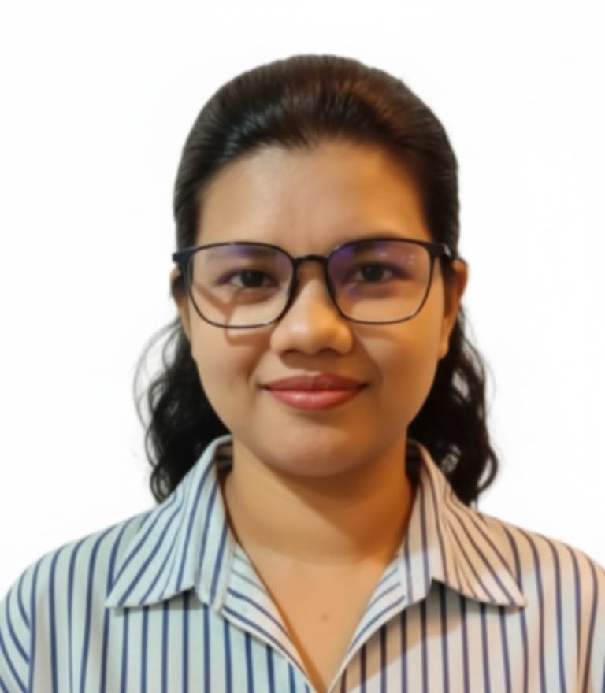

Designed and assembled the three-tier IoT node architecture - main sensor nodes with 7 sensors, GPS, and INA219, plus repeater nodes and end nodes in watertight solar-powered enclosures. Implemented adaptive transmission intervals, dual-path WiFi and LoRa firmware, sensor calibration, and the DFPlayer audio alert integration.

Developed the complete LoRa mesh communication layer: custom binary SensorPacket struct compression with about 88 percent payload reduction, XOR rolling-counter encryption, and a multi-hop routing protocol with loop prevention, duplicate suppression, and randomized collision-avoidance backoff.
Constructed the 10-year Moragaswewa gauging station dataset from 2015 to 2025, applied SMOTE oversampling to address the 1.8 percent flood prevalence, and evaluated five ML classifiers under tuned validation. Logistic Regression was selected for its 99.42 percent recall, only 3 false negatives, and low ESP32 inference overhead.
Built the centralized Laravel web dashboard with REST API telemetry ingestion, real-time geographical node visualization, Rivernet.lk river level integration, ML flood risk display, SMS alert dispatch, DFPlayer audio trigger polling, geo-tagged citizen emergency heat maps, and role-based access control.
Project Details
System at a Glance
About the Project
REMESH (Resilient Mesh Sensor Hub) is a final-year research project developed at SLIIT, Sri Lanka, motivated by the November 2025 Cyclone Ditwah flood event in the Deduru Oya river basin, which affected over 340 Grama Niladhari Divisions across Puttalam and Kurunegala Districts. The project develops a low-cost, fully offline-capable flood early warning system that operates without internet or cloud infrastructure dependency. All four components - IoT hardware, LoRa mesh, ML prediction, and dashboard - were built and tested at a total hardware cost of Rs. 34,740 (~$115 USD). The system achieves 99.42% ML flood recall with only 3 false negatives on a real 10-year hydrological dataset from the Moragaswewa gauging station.